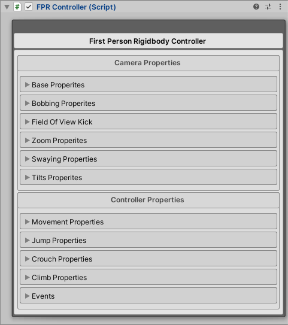
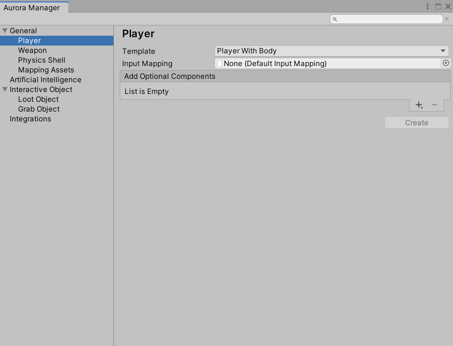
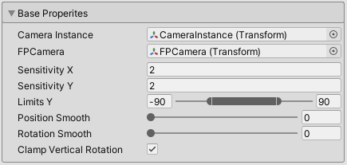
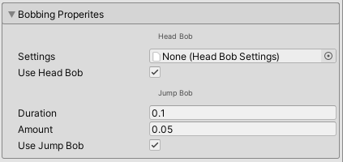
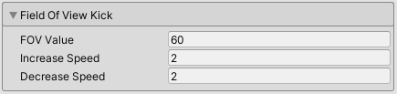
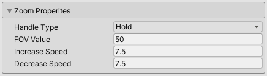
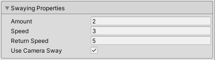
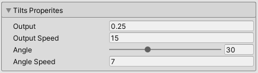

Controller
First person rigidbody controller handled by FPRController component.

Create Controller
- Open Aurora Manager window, go to the top tabs:
Aurora FPS/Aurora Manager - Choose Player section:
General/Player

| Property | Description |
|---|---|
| Template | Advanced Rigidbody Player: This is a player that already contains preset weapons and the body of a character with animations. Simple Rigidbody Player: This is a lightweight clean player that only has all the necessary components. Weapons and bodies are not preset. (Suitable when you want to customize the player ndependently) |
| Input Mapping | Map with buttons on which the player will move. The asset already has a pre-installed Input Mapping which is called Standalone Input Mapping. you can select it from the list or create your own unique one. |
| Optional Components | You can also add various optional components to the player if desired (depending on the template , some of the optional components may already be pre- installed in the default player). |
After complete configuration click Create button.
Configure Controller
Base Properties

| Property | Description |
|---|---|
| Camera Instance | Camera instance transform. |
| FPCamera | First person camera pivot transform (Parent gameobject of camera instance). |
| Sensitivity X | Look sensitivity by X(Horizontal) axis. |
| Sensitivity Y | Look sensitivity by Y(Vertical) axis. |
| Limits Y | Minimum Y(Vertical) look direction. Maximum Y(Vertical) look direction. |
| Position Smooth | Position smooth value. |
| Rotation Smooth | Rotation smooth value. |
| Limits Y | Clamp Vertical Rotation. |
Bobbing Properties
Camera shaking while moving and jumping.

| Property | Description |
|---|---|
| HeadBob/Settings | Asset file with head bob settings. |
| HeadBob/Use Head Bob | If true head bob will be processed. Otherwise false. |
| Jump Bob/Duration | Jump bob duration. |
| Jump Bob/Amount | Jump bob amount. |
| Jump Bob/Use Jump Bob | If true jump bob will be processed. Otherwise false. |
Field Of View Kick
Field of view processing when player start sprinting.

| Property | Description |
|---|---|
| FOV Value | Increase field of view value. |
| Increase Speed | Increase speed to kick field of view value. |
| Decrease Speed | Decrease speed to default field of view value. |
Zoom Properties
Field of view processing when player start zooming.

| Property | Description |
|---|---|
| Handle Type | Hold: Zoom processing while zoom input pressed. Trigger: Zoom processing when zoom input pressed once, and stop processing zoom input pressed again. |
| Increase Speed | Speed to zoom field of view value. |
| Decrease Speed | Speed to default field of view value. |
Swaying Properties
Swaying camera to the sides when player moving left or right.

| Property | Description |
|---|---|
| Amount | Camera swaying amount (Max sway camera angle). |
| Speed | Swaying speed. |
| Return Speed | Return speed on default angle. |
| Use Camera Sway | If true camera sway will be processed. Otherwise false. |
Tilts Properties
Swaying camera to the sides when player moving left or right.

| Property | Description |
|---|---|
| Output | Tilt output value. |
| Output Speed | Speed tilt to output value. |
| Angle | Tilt angle value. |
| Angle Speed | Speed tilt to target angle. |